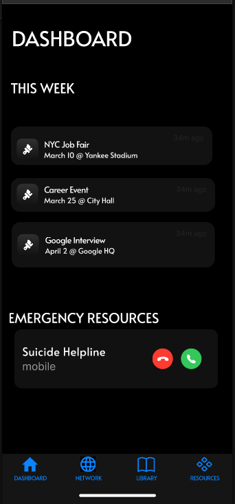
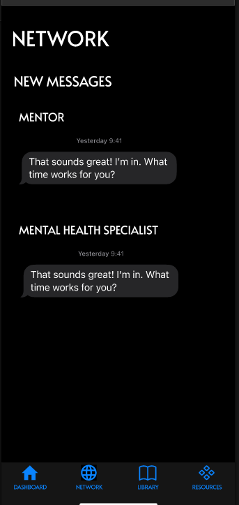
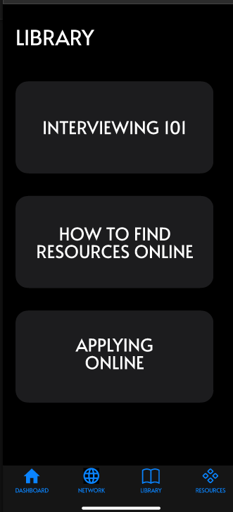
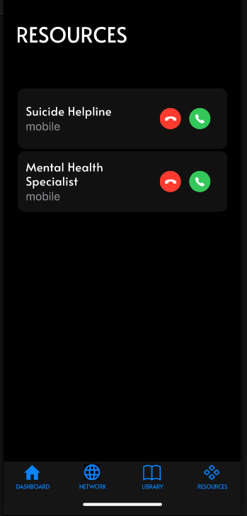

Prototype Development
In the beginning stages of our project we used sketches for our design and worked our way up to Figma for our final design.
Final Design
Dashboard
Networking
Library
Resources
Feedback & Improvements
The main feedback we got with our original prototype design was that there were no working features. We have now fixed that by implementing working navigation buttons as well as a home button.